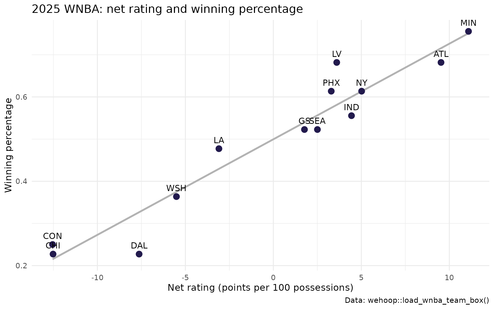
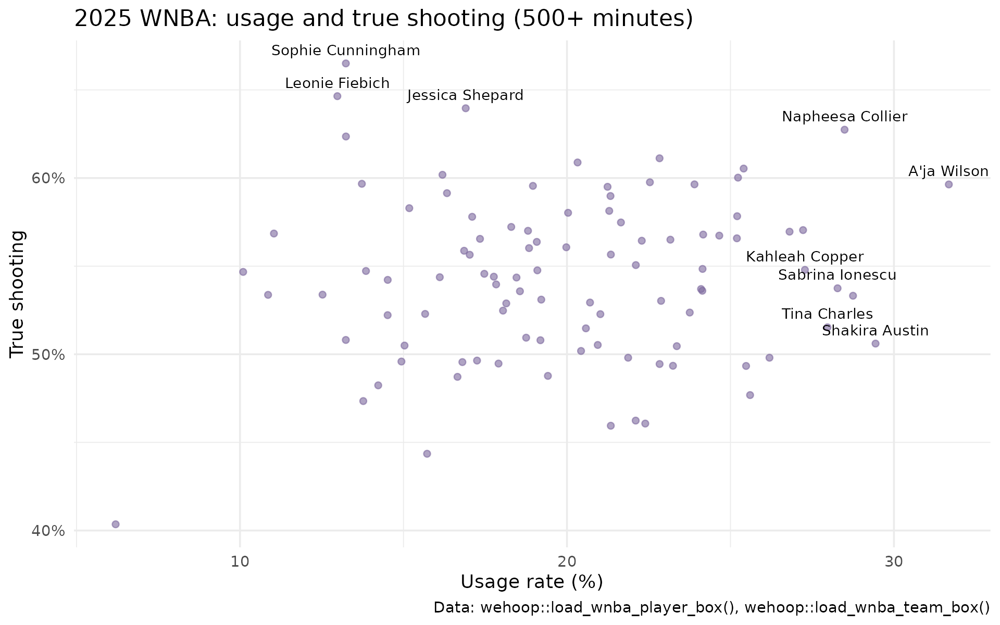

Women's Basketball Advanced Metrics in R: Possessions, Pace, Ratings and the Four Factors
Saiem Gilani, Geoffery Hutchinson
Source:vignettes/articles/womens-basketball-advanced-metrics.Rmd
womens-basketball-advanced-metrics.RmdBox score totals reward teams that play fast and players who
play a lot. Advanced metrics strip those effects out by measuring per
possession and per shot. This article computes the standard set
(possessions, pace, offensive and defensive rating, the four factors,
effective field goal percentage, true shooting and usage) from the
season box scores that wehoop publishes, with every formula
written out as dplyr code you can read and change.
Everything here runs offline on pre-built release files, so it is
quick and does not touch a live API. If you are new to
wehoop, start with Getting Started, whose glossary
defines each term.
What you’ll learn
- How to estimate possessions from a box score, and how good the estimate is.
- How to compute pace, offensive, defensive and net rating.
- How to compute Dean Oliver’s four factors for offense and defense.
- How to compute eFG%, TS% and usage rate for players.
- How the same code runs on women’s college basketball.
wehoop does not ship helper functions for these
formulas, so we write them out. That is deliberate here: seeing the
formula is the point.
Load the box scores
We use the 2025 WNBA regular season
(season_type == 2).
team_box <- load_wnba_team_box(seasons = 2025) |>
filter(season_type == 2)
player_box <- load_wnba_player_box(seasons = 2025) |>
filter(season_type == 2)ESPN files the All-Star Game as a regular-season game between two one-off teams. Keep only the franchises, which each played a full schedule.
Possessions
A possession ends when the team on offense makes a shot, loses the ball, or the defense rebounds a miss. Box scores do not count possessions, so we estimate them:
Field goal attempts start possessions, offensive rebounds extend one (so they are subtracted), turnovers end one without a shot, and 0.44 converts free throw attempts to the trips to the line that end a possession (a two-shot foul is one trip; and-ones and technicals are not trips).
Use total_turnovers, which includes team turnovers such
as shot-clock violations; turnovers counts only those
charged to a player.
Each team-game row needs its opponent’s stats too (for defensive measures), so join each row to its mirror row from the same game.
games <- team_box |>
transmute(
game_id, team_id, team = team_abbreviation, team_score,
fga = field_goals_attempted, fgm = field_goals_made,
fg3m = three_point_field_goals_made, fg3a = three_point_field_goals_attempted,
fta = free_throws_attempted, ftm = free_throws_made,
oreb = offensive_rebounds, dreb = defensive_rebounds,
tov = total_turnovers,
poss = fga - oreb + tov + 0.44 * fta
)
games <- games |>
inner_join(
games |> rename_with(~ paste0("opp_", .x), -game_id),
by = "game_id",
relationship = "many-to-many"
) |>
filter(team_id != opp_team_id)
games |>
select(game_id, team, poss, opp_team, opp_poss) |>
head()
#> # A tibble: 6 × 5
#> game_id team poss opp_team opp_poss
#> <int> <chr> <dbl> <chr> <dbl>
#> 1 401736394 NY 76.5 CHI 78.3
#> 2 401736394 CHI 78.3 NY 76.5
#> 3 401736395 PHX 78.5 DAL 81.8
#> 4 401736395 DAL 81.8 PHX 78.5
#> 5 401736396 GS 78.6 MIN 74.0
#> 6 401736396 MIN 74.0 GS 78.6The two teams’ estimates in a game differ slightly, because the formula is an approximation. A common refinement averages them so both teams share one possession count.
How good is the estimate?
The WNBA Stats API play-by-play lets you count possessions directly.
load_wnba_stats_possessions() publishes one row per counted
possession from a GitHub release, so we can compare the box score
estimate with the count. The two sources use different game ids, so
compare the league average per team-game rather than game by game.
counted <- load_wnba_stats_possessions(seasons = 2025) |>
# regular-season WNBA Stats game ids start with "102"
filter(substr(game_id, 1, 3) == "102", count_as_possession == TRUE)
poss_check <- tibble(
source = c("Box score estimate", "Counted from play-by-play"),
possessions_per_team_game = c(
mean(games$poss),
nrow(counted) / (2 * length(unique(counted$game_id)))
)
)
poss_check
#> # A tibble: 2 × 2
#> source possessions_per_team_game
#> <chr> <dbl>
#> 1 Box score estimate 80.9
#> 2 Counted from play-by-play 77.8For 2025 the box score estimate runs about 3.9% above the play-by-play count. Part of the gap is definitional: the 0.44 free-throw weight is a league-average constant that was fitted to men’s professional basketball, and the counted file applies its own rules to end-of-period and free-throw edge cases. The counted file may also include exhibition games filed as regular-season games, so treat this as a sanity check rather than an exact reconciliation. For ratings, the gap mostly cancels: offensive and defensive rating share the same denominator.
Pace
Pace is possessions per 40 minutes. Overtime adds minutes, so divide by the minutes actually played. Team minutes come from the player box score: five players are always on the court, so team minutes are the players’ minutes divided by five.
team_minutes <- player_box |>
group_by(game_id, team_id) |>
summarise(team_min = sum(minutes, na.rm = TRUE), .groups = "drop")
games <- games |> left_join(team_minutes, by = c("game_id", "team_id"))
summary(games$team_min)
#> Min. 1st Qu. Median Mean 3rd Qu. Max.
#> 198.0 200.0 200.0 200.6 201.0 251.0Minutes are rounded to whole numbers per player, so a 40-minute game sums to about 200.
Offensive, defensive and net rating
Sum the season totals first, then divide. Averaging per-game ratings would weight a 65-possession game the same as an 80-possession one.
team_season <- games |>
mutate(avg_poss = (poss + opp_poss) / 2) |>
group_by(team) |>
summarise(
games = n(),
wins = sum(team_score > opp_team_score),
pts = sum(team_score), opp_pts = sum(opp_team_score),
poss = sum(avg_poss),
minutes = sum(team_min),
across(c(fga, fgm, fg3m, fta, ftm, oreb, dreb, tov,
opp_fga, opp_fgm, opp_fg3m, opp_fta, opp_ftm, opp_oreb, opp_dreb, opp_tov),
sum),
.groups = "drop"
) |>
mutate(
win_pct = wins / games,
pace = 40 * poss / (minutes / 5),
ortg = 100 * pts / poss,
drtg = 100 * opp_pts / poss,
net = ortg - drtg
)
team_season |>
select(team, games, win_pct, pace, ortg, drtg, net) |>
arrange(desc(net))
#> # A tibble: 13 × 7
#> team games win_pct pace ortg drtg net
#> <chr> <int> <dbl> <dbl> <dbl> <dbl> <dbl>
#> 1 MIN 45 0.756 79.7 107. 95.8 11.1
#> 2 ATL 44 0.682 79.4 106. 96.4 9.53
#> 3 NY 44 0.614 81.1 104. 99.0 5.02
#> 4 IND 45 0.556 81.3 104. 99.3 4.44
#> 5 LV 44 0.682 80.6 104. 99.9 3.60
#> 6 PHX 44 0.614 81.5 102. 98.3 3.29
#> 7 SEA 44 0.523 81.2 101. 98.0 2.50
#> 8 GS 44 0.523 78.2 99.1 97.3 1.77
#> 9 LA 44 0.477 82.3 103. 106. -3.09
#> 10 WSH 44 0.364 80.2 95.9 101. -5.51
#> 11 DAL 44 0.227 82.3 99.0 107. -7.63
#> 12 CHI 44 0.227 80.2 94.5 107. -12.5
#> 13 CON 44 0.25 80.3 94.1 107. -12.5
ggplot(team_season, aes(net, win_pct)) +
geom_smooth(method = "lm", se = FALSE, color = "grey70", formula = y ~ x) +
geom_point(size = 3, color = "#221A4D") +
geom_text(aes(label = team), vjust = -0.9, size = 3.5) +
labs(
title = "2025 WNBA: net rating and winning percentage",
x = "Net rating (points per 100 possessions)", y = "Winning percentage",
caption = "Data: wehoop::load_wnba_team_box()"
) +
theme_minimal()
cor(team_season$net, team_season$win_pct)
#> [1] 0.9611032The four factors
Dean Oliver identified four things that decide most games, each measured for a team’s offense and the same quantity allowed on defense:
| Factor | Offense | Defense |
|---|---|---|
| Shooting | the opponent’s eFG% | |
| Turnovers | the opponent’s TOV% | |
| Offensive rebounding | ||
| Free throws | the opponent’s FT rate |
Some sources define FT rate as FTA / FGA, which measures getting to the line rather than converting there. Oliver’s version, FTM / FGA, is used below.
four_factors <- team_season |>
mutate(
efg = (fgm + 0.5 * fg3m) / fga,
tov_pct = tov / poss,
oreb_pct = oreb / (oreb + opp_dreb),
ft_rate = ftm / fga,
opp_efg = (opp_fgm + 0.5 * opp_fg3m) / opp_fga,
opp_tov_pct = opp_tov / poss,
dreb_pct = dreb / (dreb + opp_oreb),
opp_ft_rate = opp_ftm / opp_fga
) |>
select(team, net, efg, tov_pct, oreb_pct, ft_rate,
opp_efg, opp_tov_pct, dreb_pct, opp_ft_rate) |>
arrange(desc(net))
four_factors |>
mutate(across(-team, ~ round(.x, 3)))
#> # A tibble: 13 × 10
#> team net efg tov_pct oreb_pct ft_rate opp_efg opp_tov_pct dreb_pct
#> <chr> <dbl> <dbl> <dbl> <dbl> <dbl> <dbl> <dbl> <dbl>
#> 1 MIN 11.1 0.539 0.163 0.259 0.179 0.481 0.193 0.74
#> 2 ATL 9.53 0.514 0.157 0.267 0.216 0.478 0.153 0.798
#> 3 NY 5.02 0.526 0.17 0.208 0.239 0.483 0.168 0.736
#> 4 IND 4.44 0.516 0.172 0.264 0.201 0.501 0.187 0.757
#> 5 LV 3.60 0.506 0.161 0.235 0.225 0.489 0.168 0.745
#> 6 PHX 3.29 0.502 0.166 0.244 0.203 0.486 0.185 0.755
#> 7 SEA 2.50 0.505 0.15 0.199 0.178 0.497 0.197 0.742
#> 8 GS 1.77 0.482 0.181 0.26 0.23 0.472 0.163 0.76
#> 9 LA -3.09 0.521 0.181 0.241 0.234 0.524 0.163 0.736
#> 10 WSH -5.51 0.483 0.19 0.235 0.245 0.505 0.17 0.776
#> 11 DAL -7.63 0.469 0.168 0.276 0.206 0.531 0.163 0.757
#> 12 CHI -12.5 0.476 0.211 0.291 0.198 0.521 0.148 0.747
#> 13 CON -12.5 0.458 0.173 0.244 0.216 0.53 0.184 0.726
#> # ℹ 1 more variable: opp_ft_rate <dbl>Which factor tracks winning most closely this season? Correlate each team’s factor margin (offense minus what it allowed) with net rating. With only 13 teams this is descriptive, not a model.
four_factors |>
transmute(
net,
shooting = efg - opp_efg,
turnovers = opp_tov_pct - tov_pct,
rebounding = oreb_pct - (1 - dreb_pct),
free_throws = ft_rate - opp_ft_rate
) |>
summarise(across(-net, ~ cor(.x, net))) |>
tidyr::pivot_longer(everything(), names_to = "factor_margin", values_to = "cor_with_net")
#> # A tibble: 4 × 2
#> factor_margin cor_with_net
#> <chr> <dbl>
#> 1 shooting 0.954
#> 2 turnovers 0.552
#> 3 rebounding -0.0274
#> 4 free_throws 0.388Signs are arranged so that a positive margin is good for the team in every row.
Player efficiency: eFG%, TS% and usage
True shooting percentage folds free throws into shooting efficiency. Each true shot attempt is a field goal attempt or a free throw trip (0.44 of an FTA):
Usage rate is the share of team possessions a player finishes, by a shot, a trip to the line or a turnover, while she is on the court:
Usage needs the team totals from the games the player played, so join each player-game to its team-game row first.
team_game_totals <- games |>
select(game_id, team_id, team_min, team_fga = fga, team_fta = fta, team_tov = tov)
players <- player_box |>
filter(did_not_play == FALSE, !is.na(minutes), minutes > 0) |>
inner_join(team_game_totals, by = c("game_id", "team_id")) |>
group_by(athlete_display_name, team_abbreviation) |>
summarise(
games = n(),
min = sum(minutes),
pts = sum(points),
fga = sum(field_goals_attempted), fgm = sum(field_goals_made),
fg3m = sum(three_point_field_goals_made),
fta = sum(free_throws_attempted),
tov = sum(turnovers),
team_min = sum(team_min),
team_used = sum(team_fga + 0.44 * team_fta + team_tov),
.groups = "drop"
) |>
mutate(
efg = (fgm + 0.5 * fg3m) / fga,
ts = pts / (2 * (fga + 0.44 * fta)),
usage = 100 * (fga + 0.44 * fta + tov) * (team_min / 5) / (min * team_used)
)
players |>
filter(min >= 500) |>
arrange(desc(usage)) |>
select(athlete_display_name, team_abbreviation, games, min, pts, efg, ts, usage) |>
head(12)
#> # A tibble: 12 × 8
#> athlete_display_name team_abbreviation games min pts efg ts usage
#> <chr> <chr> <int> <dbl> <int> <dbl> <dbl> <dbl>
#> 1 A'ja Wilson LV 40 1248 937 0.524 0.596 31.7
#> 2 Shakira Austin WSH 38 874 481 0.467 0.506 29.4
#> 3 Satou Sabally PHX 39 1040 636 0.469 0.533 28.7
#> 4 Napheesa Collier MIN 34 1099 767 0.571 0.627 28.5
#> 5 Sabrina Ionescu NY 38 1191 693 0.472 0.537 28.3
#> 6 Tina Charles CON 43 1225 700 0.449 0.515 28.0
#> 7 Kahleah Copper PHX 28 752 438 0.503 0.548 27.3
#> 8 Kelsey Mitchell IND 45 1418 902 0.533 0.570 27.2
#> 9 Breanna Stewart NY 31 948 566 0.487 0.570 26.8
#> 10 Brittney Sykes WSH 25 774 385 0.412 0.498 26.2
#> 11 Marina Mabrey CON 35 1103 504 0.434 0.477 25.6
#> 12 Courtney Williams MIN 45 1296 610 0.474 0.493 25.5
qualified <- players |> filter(min >= 500)
ggplot(qualified, aes(usage, ts)) +
geom_point(alpha = 0.6, color = "#7c689c") +
geom_text(
aes(label = athlete_display_name),
data = qualified |> filter(usage > quantile(usage, 0.93) | ts > quantile(ts, 0.97)),
size = 3, vjust = -0.8, check_overlap = TRUE
) +
scale_y_continuous(labels = scales::percent) +
labs(
title = "2025 WNBA: usage and true shooting (500+ minutes)",
x = "Usage rate (%)", y = "True shooting",
caption = "Data: wehoop::load_wnba_player_box(), wehoop::load_wnba_team_box()"
) +
theme_minimal()
Players in the top-right carry a large share of the offense and stay efficient, which is hard to sustain.
Women’s college basketball
The college box scores have the same columns, so the code carries over. Division I teams also play non-Division I opponents, so restrict the table to teams with a full schedule in the release.
wbb_box <- load_wbb_team_box(seasons = 2026) |>
filter(season_type %in% c(2, 3))
wbb_games <- wbb_box |>
transmute(
game_id, team_id, team = team_location, team_score,
fga = field_goals_attempted, fgm = field_goals_made,
fg3m = three_point_field_goals_made, fta = free_throws_attempted,
oreb = offensive_rebounds, tov = total_turnovers,
poss = fga - oreb + tov + 0.44 * fta
)
wbb_games <- wbb_games |>
inner_join(wbb_games |> select(game_id, opp_team_id = team_id,
opp_score = team_score, opp_poss = poss),
by = "game_id", relationship = "many-to-many") |>
filter(team_id != opp_team_id)
wbb_games |>
mutate(avg_poss = (poss + opp_poss) / 2) |>
group_by(team) |>
summarise(
games = n(),
ortg = 100 * sum(team_score) / sum(avg_poss),
drtg = 100 * sum(opp_score) / sum(avg_poss),
efg = (sum(fgm) + 0.5 * sum(fg3m)) / sum(fga),
.groups = "drop"
) |>
filter(games >= 25) |>
mutate(net = ortg - drtg) |>
arrange(desc(net)) |>
head(10)
#> # A tibble: 10 × 6
#> team games ortg drtg efg net
#> <chr> <int> <dbl> <dbl> <dbl> <dbl>
#> 1 UConn 39 119. 69.3 0.585 50.1
#> 2 LSU 35 122. 78.5 0.548 43.5
#> 3 UCLA 38 122. 81.8 0.565 39.8
#> 4 Texas 39 116. 77.2 0.528 39.0
#> 5 South Carolina 40 117. 79.2 0.546 38.0
#> 6 TCU 38 109. 81.0 0.540 28.4
#> 7 North Dakota State 34 114. 87.1 0.531 27.1
#> 8 Fairfield 33 109. 81.7 0.547 26.8
#> 9 Fairleigh Dickinson 35 107. 80.1 0.498 26.4
#> 10 Michigan 35 109. 83.2 0.512 26.1These are raw ratings: they do not account for who a team played. A team that beats weak opponents by 40 looks better here than it is. The team ratings model adjusts for schedule strength.
Official numbers for a single game
The WNBA Stats API publishes its own advanced box scores per game, computed from counted possessions. They make a useful check on your formulas. These are live calls to stats.wnba.com, so they are not run here.
wnba_boxscorefourfactorsv3(game_id = "1022500001")
wnba_boxscoreadvancedv3(game_id = "1022500001")
wnba_boxscoreusagev3(game_id = "1022500001")Where to go next
- Shot charts: where the shots behind eFG% come from.
- WNBA player impact model: RAPM, box plus/minus and WAR, which go beyond per-possession box score rates.
- Women’s college team ratings model: opponent-adjusted efficiency.
- Women’s college player value model: a box plus/minus built from these per-100 rates.
- The release loaders in the function reference.